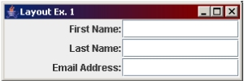
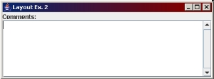

Later in the course, you'll learn how to make complex layouts using the Netbeans GUI builder. However, in order to understand how layout management works, you need to learn some basic layout management concepts and tools. The key thing to remember as you're learning about layout management is that a Java program's interface needs to be liquid: The screen should resize without the components shifting too much, it should be professional, user-friendly, and all components should be clearly visible no matter what the user's screen settings are set too (e.g. large fonts, high-contrast, etc). There shouldn't be any large gaps or "whitespace" in your interface and you should always resize and maximize your interface to ensure that it always keeps its professional and user-friendly appearance.
In Java, layout management helps you to lay out your components in a container. Layout Managers are classes you can use to define how you would like a component or set of components to be placed in a container. Layout managers generally work by dividing a container into cells or areas. Each cell of a layout has a preferred height and width, and components that are placed into cells will often be resized to fit with other components in other cells. For this reason, we often combine layout managers: You might place a label and text field pair into one container, laid out so that they are placed together. You might then do this to similar pairs of labels and text fields. Then you might place each of these label/text field containers into a container that lines them up in rows.
Container classes (such as the content pane and panels, which we'll learn about shortly) have a setLayout() method that accepts a Layout object as an argument. This layout object is assigned to the container and will affect how objects are placed when you put them into the container.
FlowLayout is one of the more basic layout classes and it is part of the java.awt package. FlowLayout likes to keep its components in a row. If it runs to the edge of the screen, it will wrap to the next line and place the rest of the components on the next row. Its preferred height is the height of the tallest item in the row plus whatever vertical gap size you set for it. Its preferred width is the sum of the widths of all its components plus any horizontal gap space you place between components and the end of the row.
Try this out. Create a new Swing interface with 4 buttons (whatever text you like). Set the layout of the content pane to a left-aligned FlowLayout and vertical & horizontal gap space of 5 pixels. Add your buttons to the content pane.
Try out your interface to see how it appears. Try making the following changes:
GridLayout uses a grid, or rows and columns, to lay out components: It will add components one row at a time, going left to right, then continue with the next row. GridLayout will stretch all components to be of equal size in the grid, so the preferred size of a particular cell will be the height and width of the largest component in the layout. One other important thing about GridLayout is that you can only place one component into a cell.
Try it out: Change the layout of your content pane to a GridLayout with 2 rows, 2 columns, and 5 pixels of vertical and horizontal gap space. What happens as you resize the frame?
Try the following changes:
Create the following interface:

BorderLayout divides your container into 5 areas labeled "North", "South", "East", "West", and "Center". This looks like a pretty useless layout manager but it's actually very useful when you combine it with other layout managers.
As with GridLayout, you can only place one component in the cell of a BorderLayout. In addition, when you add a component to a container with a BorderLayout, you must include a second argument to the add() method that specifies which cell the component must go in. For example:
add(cmdExit, BorderLayout.SOUTH);
This places the component cmdExit into the South cell of the BorderLayout. Possible values are BorderLayout.SOUTH, BorderLayout.NORTH, BorderLayout.EAST, BorderLayout.WEST, and BorderLayout.CENTER.
The preferred size for a cell in a BorderLayout depend on which position your component is in:
Try it: Add a fifth button to your interface and place all five buttons into cells of a BorderLayout.
Create the following interface:

| Layout Manager | Components' Preferred Size | Behaviour | |
|---|---|---|---|
| FlowLayout | Keeps natural height and width | Lays out components in a row and then wraps to the next row when there is no more width. | |
| GridLayout | Will resize all components to the width of the widest component and the height of the tallest component, unless the container is too small, in which case it will divide the available height and width evenly among all components. All components will always be the exact | Components fill a grid from left to right in the order they were added; when one row is filled, they are then added to the next row. Only one component allowed per "cell". | |
| BorderLayout | Depends on the area. | Divides the container into five cells or areas labeled NORTH, SOUTH, EAST, WEST, and CENTER. | |
| NORTH, SOUTH | Keeps preferred height. Will try to stretch width-wise as far as it can go, even to the edge of the container. |
Helpful when you want a component to stay anchored to the top or bottom of the container and you want it to stretch across the container's width. | |
| WEST, EAST | Keeps preferred width. Will try to stretch height-wise as far as it can go, either to the top/bottom edge of the container or until it meets up with a component in the NORTH/SOUTH area. |
Useful if you want a component to stretch up and down in a container but keep its natural width while staying anchored to the side of the container. | |
| CENTER | Will try to stretch the height and width of component to take up all available space in the container that is not taken up by components in the other 4 areas. | Often used for components like text areas that need to fill most of the screen. | |